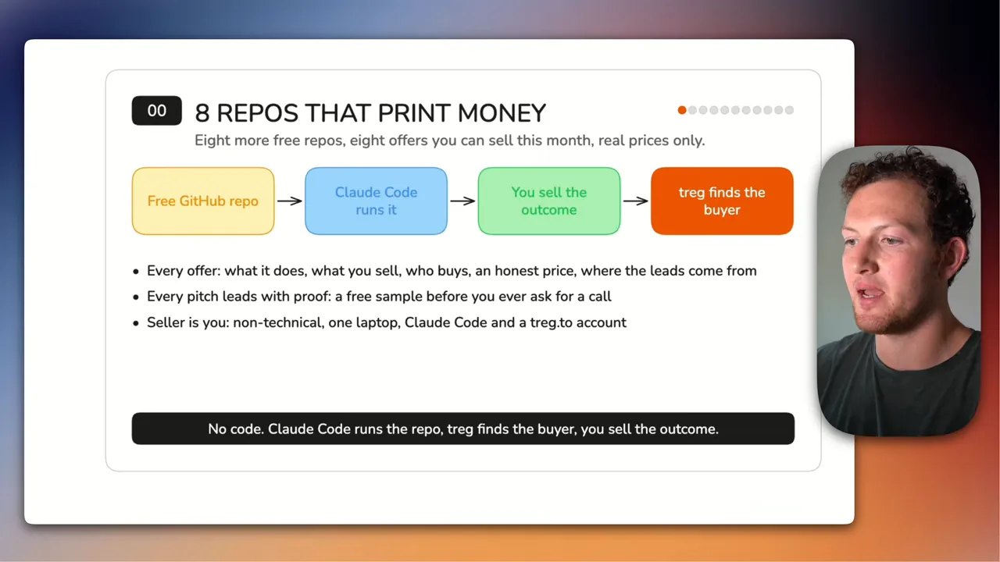
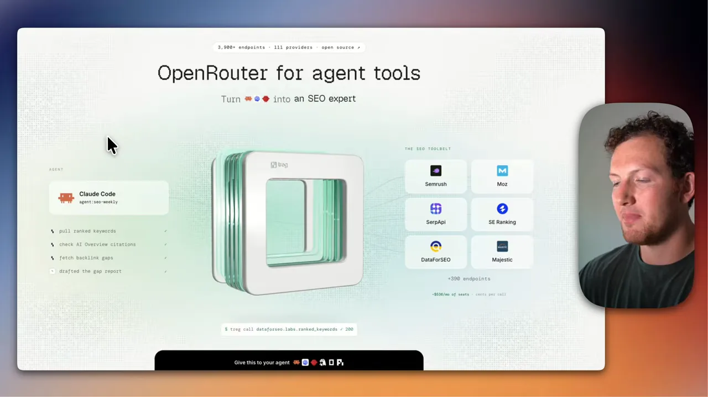
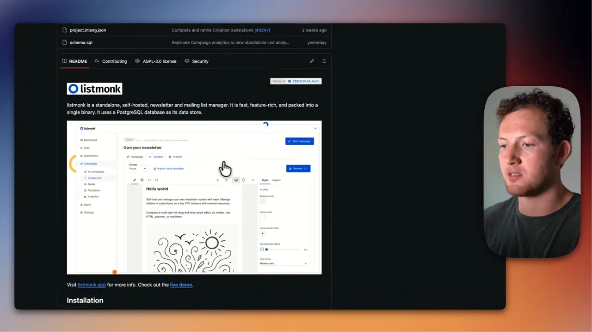
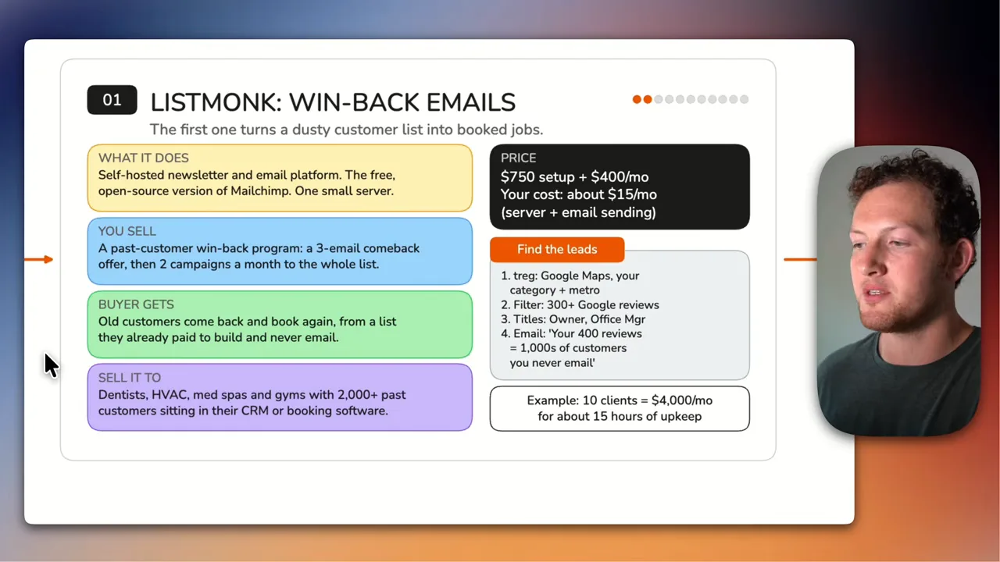
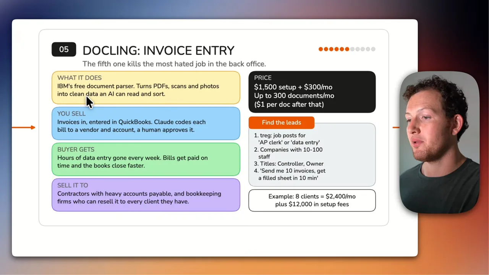
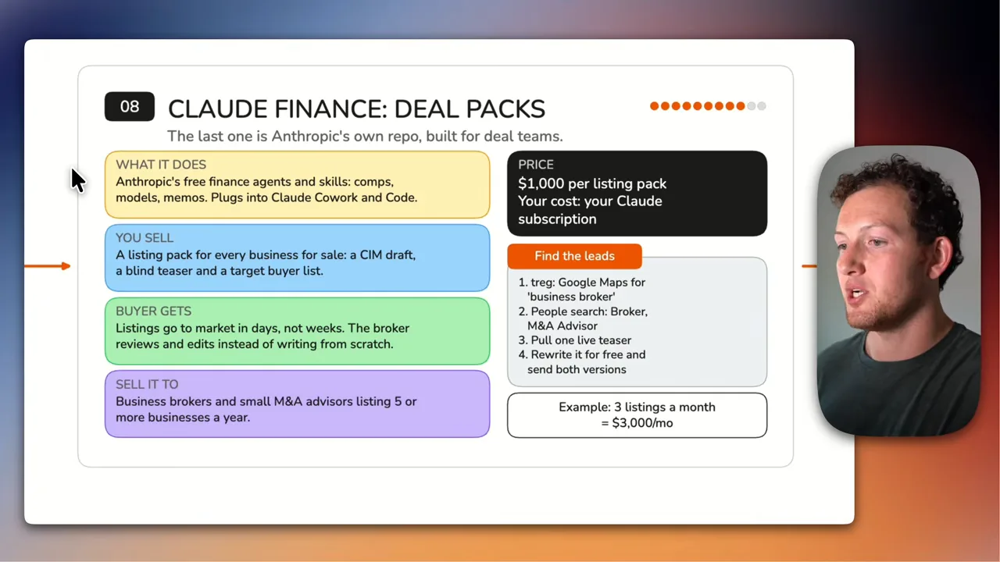
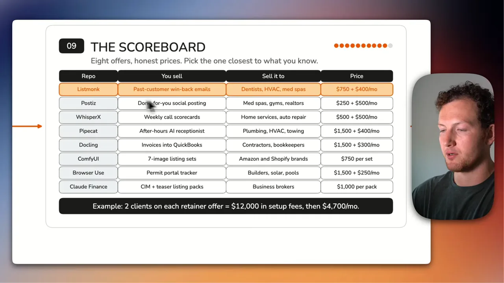

공통 공식과 손님 찾는 도구
발표자는 여덟 가지 서비스를 모두 같은 공식으로 설명해요. 무료 깃허브 저장소를 고르고, 설치와 운영은 Claude Code에 맡기고, 사람은 '결과'를 팔아요. 마지막으로 살 사람은 treg라는 도구로 찾아요. 코딩을 몰라도, 사업이 처음이어도 할 수 있다는 게 영상의 전제예요.
첫 슬라이드 위쪽 네 칸이 그 공식이에요. 노란 칸(무료 저장소)에서 시작해 주황 칸(treg가 살 사람을 찾음)으로 끝나요. 아래 세 줄은 이 영상이 지키는 규칙이에요. 모든 제안에 하는 일·파는 것·사는 사람·정직한 가격·리드 출처를 붙이고, 모든 영업은 통화를 청하기 전에 공짜 샘플부터 보내요.

손님은 AI에 관심이 없어요
영상 전체에서 반복되는 원칙이 하나 있어요. 동네 치과나 배관 업체 사장은 AI나 깃허브 이야기를 꺼내는 순간 귀를 닫아요. 그들이 사는 건 '옛 손님이 다시 와요', '밤에도 전화를 받아요' 같은 결과예요. 그래서 슬라이드마다 초록 칸(손님이 얻는 것)을 따로 두고, 영업 문구도 그 칸에서 가져와요.
They do not care about AI, they do not care about GitHub.
그 사람들은 AI에도, 깃허브에도 관심이 없어요.
— 영상 02:12
가격도 일부러 낮게 잡았다고 해요. 부풀린 숫자 대신 평범한 사람이 자신 있게 제안할 수 있는 금액이라는 거예요.
손님 찾기: treg
손님 찾기는 여덟 가지 모두 treg(treg.to)로 해요. 발표자는 이 도구를 '구독형 도구들의 OpenRouter'라고 불러요. Apollo 같은 영업 데이터 도구에 월 100달러를 내는 대신, 여러 데이터 도구를 쓴 만큼만 내고 불러 쓴다는 뜻이에요. 화면에 뜬 treg 첫 페이지도 'OpenRouter for agent tools'라는 문구를 크게 걸고, 왼쪽의 Claude Code가 가운데 treg를 거쳐 오른쪽 여러 도구(Semrush, Moz 등)를 부르는 그림을 보여 줘요.

영상 속 treg 활용은 크게 세 가지예요. 구글 지도에서 지역·업종별 업체를 긁어 리뷰 수나 별점으로 거르고, 구인 공고에서 특정 직무를 뽑는 회사를 찾고, 사람 검색으로 사장이나 실무 책임자의 연락처를 찾아요. 발표자는 treg와 제휴 관계가 없다고 밝혀요.
listmonk: 옛 손님을 다시 부르는 이메일
listmonk는 Mailchimp의 무료 오픈소스판이에요. Mailchimp는 명단이 커질수록 요금이 올라서, 이메일 수만 개를 가진 업체는 한 달에 수백에서 수천 달러를 내요. listmonk는 내 서버 하나에서 돌리니 그 비용이 거의 사라져요. 화면에 잡힌 저장소 README에도 '셀프 호스팅 뉴스레터·메일링 리스트 관리자, 바이너리 하나로 실행'이라고 적혀 있어요.

이제 여덟 장 모두 같은 틀의 슬라이드가 나와요. 왼쪽 위부터 노란 칸은 도구가 하는 일, 파란 칸은 내가 파는 것, 초록 칸은 손님이 얻는 것, 보라 칸은 팔 대상이에요. 오른쪽 검은 칸이 가격과 내 비용, 회색 칸이 손님 찾는 순서, 맨 아래가 예상 매출이에요.
listmonk 슬라이드에서 파란 칸을 보면, 파는 건 '돌아오세요' 이메일 3통과 이후 전체 명단에 한 달 두 번 보내는 캠페인이에요. 초록 칸이 핵심이에요. 이미 돈 들여 모아 놓고 한 번도 메일을 안 보낸 명단에서 옛 손님이 다시 예약해요.

팔 대상은 지난 손님이 CRM(Customer Relationship Management)이나 예약 프로그램에 2,000명 넘게 쌓인 치과, HVAC(Heating, Ventilation, and Air Conditioning) 업체, 메드스파, 헬스장이에요. 셋업비 750달러에 월 400달러를 받고, 내 비용은 서버와 발송비를 합쳐 월 15달러쯤이에요. 발표자는 손님이 월 400달러로 얻는 추가 매출을 생각하면 ROI(Return on Investment)가 크다고 강조해요.
리드는 treg로 구글 지도를 긁어 구글 리뷰가 300개 넘는 업체만 남기고, 사장이나 실장을 찾아요. 리뷰가 많다는 건 손님이 많았다는 뜻이니, 그 숫자를 첫 메일의 미끼로 써요. 손님 10곳이면 월 4,000달러, 관리에는 한 달 15시간쯤 든다는 계산이에요.
Postiz: 멈춘 SNS를 대신 굴리기
Postiz는 Buffer나 Hootsuite 같은 예약 게시 도구의 오픈소스판이에요. 인스타그램, 페이스북, 링크드인 같은 채널을 달력 하나에서 관리해요. 발표자는 X에서 자주 보던 저장소라며, 인기가 있는 건 실제로 잘 돌아가서라고 말해요.
슬라이드 파란 칸을 보면 파는 건 Claude가 손님 말투로 쓴 게시물 한 달 12~16개, 예약 게시, 짧은 월간 성과 보고서예요. 초록 칸의 결과는 담당자를 뽑지도, 사장이 직접 하지도 않았는데 피드가 매주 살아 있는 상태예요. 사장들은 게시물을 올려야 한다는 걸 알지만 시간을 못 냈을 뿐이라는 게 발표자의 진단이에요.

보라 칸의 팔 대상은 마지막 게시물이 몇 달 전인 메드스파, 헬스장, 부동산 중개인, 식당이에요. 서버 하나에 모든 손님을 올리니 내 비용은 월 10달러쯤이에요.
리드 찾기는 증거를 만드는 과정이기도 해요. treg로 별점 4.5 이상 업체를 긁고, 각 업체의 인스타그램 게시물을 불러와 60일 넘게 조용한 곳을 표시해요. 첫 메일에는 그 멈춘 피드의 캡처와, 온라인에서 찾은 정보로 그 업체 말투에 맞춰 미리 써 둔 게시물 3개를 붙여요. 10곳이면 월 5,000달러, 일은 한 달 30시간쯤이에요.
WhisperX와 Pipecat: 전화에서 새는 돈
세 번째와 네 번째는 둘 다 전화에서 새는 돈을 막는 서비스예요. 하나는 이미 받은 통화를 채점하고, 다른 하나는 아무도 안 받는 시간의 전화를 대신 받아요.
WhisperX: 통화 점수표
WhisperX는 통화를 글로 옮기면서 누가 어떤 말을 했는지까지 붙여 주는 무료 음성 인식 도구예요. 슬라이드 노란 칸 둘째 문장처럼, 그 녹취를 Claude가 채점해요. Otter.ai 같은 회의 녹취 도구도 있지만, 기성품은 '어떤 통화가 예약으로 이어졌어야 했나'까지 알려 주지 않는다는 게 차별점이에요.

파란 칸의 상품은 녹음된 모든 인바운드 통화를 묶은 주간 점수표예요. 예약 성공률, 놓친 업셀, 상담원별 코칭 메모가 들어가요. 매출에 바로 닿는 서비스라 손님이 쉽게 끊지 않는다는 게 발표자가 좋아하는 이유예요.
팔 대상은 전화 담당이 2~5명이고 통화 녹음을 이미 켜 둔 홈서비스 업체와 자동차 정비소예요. 리드는 Indeed와 LinkedIn에서 CSR(Customer Service Representative)이나 배차 담당을 뽑는 직원 10~50명 업체를 찾아 사장이나 GM(General Manager)에게 연락해요. 미끼는 미스터리 쇼핑이에요. 직접 전화를 걸어 보고 '이 지점에서 업셀을 놓쳤어요'라는 보고서를 보내면, 손님은 받게 될 결과물을 미리 보는 셈이에요. 8곳이면 월 4,000달러, 일은 한 달 16시간쯤이에요.
Pipecat: 영업시간 뒤 AI 접수원
Pipecat은 실시간 음성 에이전트를 만드는 오픈소스 프레임워크예요. Vapi나 Bland 같은 유료 음성 에이전트 서비스의 무료 대안이고, 내 서버에서 돌려요.
슬라이드 파란 칸의 상품은 영업시간 뒤 전화를 받아 상황을 묻고, 예약하거나 급한 건은 넘기고, 사장에게 요약 문자를 보내는 AI 접수원이에요. 발표자는 사장뿐 아니라 전화를 건 손님에게도 요약을 보내 후속 연락까지 자동으로 이어 갈 수 있다고 덧붙여요.

팔 대상은 배관, 냉난방, 차고 문, 열쇠, 견인처럼 긴급 전화로 먹고사는 업체예요. 이들은 퇴근하면 전화를 안 받고, 그 사이 급한 일은 먼저 받는 경쟁 업체로 넘어가요. 리드는 같은 업종 중 24시간 영업이 아닌 곳을 골라 사장이나 운영 책임자를 찾아요. 그리고 일부러 밤 9시에 전화를 걸어, 그때 들은 음성사서함 녹음을 그대로 첫 메일에 붙여요. 6곳이면 월 2,400달러에 셋업비 9,000달러예요.
Docling: 송장 입력 자동화
Docling은 IBM(International Business Machines)이 만든 무료 문서 파서예요. PDF(Portable Document Format), 스캔본, 사진을 AI가 읽고 분류할 수 있는 깨끗한 데이터로 바꿔 줘요. 발표자는 한때 깃허브 일간 인기 1위에 올랐던 저장소라고 소개해요.
슬라이드 부제가 서비스의 성격을 요약해요. '사무실에서 가장 싫어하는 일을 없앤다'예요. 파란 칸을 보면 송장이 들어오면 QuickBooks에 입력되고, Claude가 송장마다 거래처와 계정 과목을 붙이고, 사람이 마지막에 승인해요. 사람이 승인 단계를 쥐고 있어서 빠뜨리거나 잘못 분류하는 일을 막아요.

초록 칸의 결과는 매주 몇 시간씩 드는 입력 작업이 사라지는 거예요. 송장 입력만 하는 정규직을 둔 회사가 생각보다 많다고 해요. 입력이 빨라지면 대금을 제때 내고 장부도 빨리 마감하고, 받을 돈도 제때 받아요.
보라 칸의 팔 대상은 매입 채무가 많은 시공사, 그리고 회계 대행사예요. 회계 대행사에 팔면 그 대행사가 자기 고객사 모두에게 이 서비스를 되팔 수 있어요. 발표자는 이걸 B2B2B(Business to Business to Business)라고 부르며, 대행사가 파는 만큼 내 몫도 생긴다고 설명해요.
리드는 AP(Accounts Payable) 담당이나 데이터 입력 직원을 뽑는 직원 10~100명 회사에서 재무 책임자나 사장을 찾아요. 제안은 '가짜 송장 10장만 보내 주시면 10분 안에 시트를 다 채워 드릴게요'예요. 실제 송장은 달라고 하지 않고, 결과는 Loom 영상으로 시연해 보내요. 8곳이면 월 2,400달러에 셋업비 12,000달러예요.
ComfyUI: 상품 상세 이미지 세트
ComfyUI는 발표자가 이름 읽는 법도 헷갈려한 저장소지만, 별이 13만 개가 넘는 가장 인기 있는 오픈소스 AI 이미지 작업 도구예요. 스크린샷은 복잡해 보여도 실제로는 그렇지 않다고 해요. 슬라이드 노란 칸처럼, 빌린 GPU(Graphics Processing Unit)에서 반복해서 돌릴 수 있는 이미지 작업 흐름을 짜는 도구예요. 발표자는 Higgsfield 같은 유료 서비스의 오픈소스판에 비유해요.
파란 칸의 상품은 상품 하나당 7장짜리 상세 이미지 세트예요. 실제 상품 사진을 바탕으로 라이프스타일 장면과 인포그래픽을 만들어요. 아마존이나 Shopify에서 대충 찍었거나 티 나게 합성한 사진은 상품을 싸 보이게 만들어요. 초록 칸의 결과는 상품을 있는 그대로 보여 주는 전문가급 이미지예요. 발표자는 빠르면 48시간 안에 넘길 수 있다고 말해요.
보라 칸의 팔 대상은 상품이 10개 넘는데 이미지가 흰 배경뿐이거나 7장이 안 되는 브랜드예요. 세트당 750달러를 받고 비용은 GPU 몇 달러라, 마진이 98%를 넘을 수 있다고 해요.
리드는 treg로 Shopify를 쓰는 스토어와 이미지가 7장 미만인 아마존 상품을 찾아, 창업자나 이커머스 매니저에게 연락해요. 미끼는 그 브랜드의 대표 이미지를 공짜로 다시 만들어 보내는 거예요. 한 달 10세트면 월 7,500달러예요. 큰 브랜드는 한 달에 신제품을 대여섯 개씩 내기도 해서, 손님 한 곳만으로 10세트의 절반쯤은 채울 수 있다고 봐요.
Browser Use와 Claude Finance: 시간이 곧 돈인 일
일곱 번째와 여덟 번째는 '시간을 줄여 주면 그게 곧 돈'인 업종을 노려요. 공사를 하루 빨리 시작하거나 매물을 하루 빨리 시장에 내면, 그만큼 손님의 돈이 빨리 들어와요.
Browser Use: 인허가 추적 봇
Browser Use는 Anthropic이나 OpenAI 생태계에 묶이지 않은 오픈소스 AI 브라우저 에이전트예요. API(Application Programming Interface)나 연동 기능이 없는 웹사이트에도 로그인해서 사람처럼 클릭하며 일을 해요.
슬라이드 부제는 '아무도 하기 싫은 클릭을 대신한다'예요. 파란 칸의 상품은 인허가 추적기예요. 봇이 매일 각 시청의 인허가 포털을 확인하고, 시트를 업데이트하고, 바뀐 게 있으면 현장 책임자에게 문자를 보내요.

초록 칸의 결과는 포털을 새로고침하며 보내던 시간이 사라지고, 허가가 나는 날 바로 검사를 잡는 거예요. 공사를 평균 하루 이틀만 당겨도 수천 달러의 매출이 생긴다는 게 발표자의 계산이에요.
팔 대상은 여러 도시에 걸쳐 진행 중인 허가가 20건 넘는 주택 건설사, 리모델링, 수영장·태양광 시공사예요. 셋업 1,500달러에 월 250달러를 받고, AI 사용료와 작은 서버로 월 30달러쯤 들어요. 그 비용도 원하면 손님에게 넘길 수 있다고 해요. 리드는 인허가 담당자를 뽑는 회사를 찾아 사장이나 운영 책임자에게 연락해요. 8곳이면 월 2,000달러에 셋업비 12,000달러예요.
Claude Finance: 매각 리스팅 팩
마지막은 Anthropic이 직접 낸 저장소예요. 발표자는 Claude Finance라고 부르는데, 금융 업무용 에이전트와 스킬을 모은 것으로 Claude Cowork와 Claude Code에 바로 붙어요. 슬라이드 노란 칸에는 비교 기업 분석, 재무 모델, 메모 같은 기능이 적혀 있어요.

상품은 매물로 나온 회사마다 만드는 리스팅 팩이에요. 사업체 중개인이 매물을 시장에 내려면 회사 소개 자료, 이름을 가린 티저, 살 만한 후보 목록이 필요해요. 이걸 Claude가 초안으로 만들어 주면 매물이 몇 주가 아니라 며칠 만에 나가고, 중개인은 검토와 수정만 해요. 거래가 빨리 끝날수록 중개인도 빨리 돈을 받아요.
발표자는 이 서비스를 실제로 판 적이 있다고 해요. 그때는 이 저장소가 아니라 커스텀 GPT(Generative Pre-trained Transformer)로 만들었고 3,000달러를 받았어요. 그래서 슬라이드의 팩당 1,000달러는 낮게 잡은 값이라고 강조해요. 팔 대상은 한 해 다섯 곳 이상 매물을 다루는 사업체 중개인과 소규모 M&A 자문사예요. 비용은 Claude 구독료뿐이라 월 20달러 요금제로도 될 거라고 봐요.
리드는 구글 지도에서 사업체 중개인을 찾고, 사람 검색으로 중개인이나 M&A 자문역을 찾아요. 그 중개인이 지금 올려 둔 티저 하나를 공짜로 다시 써서 원래 것과 함께 보내요. 한 달 3건이면 월 3,000달러예요.
점수판과 어디서 시작할까요
마지막 슬라이드는 여덟 가지를 한 표에 모은 점수판이에요. 저장소, 파는 것, 팔 대상, 가격 네 열이고, 첫 줄 listmonk만 주황색으로 강조돼 있어요. 맨 아래 검은 띠는 월 구독형 여섯 가지를 손님 두 곳씩만 받아도 셋업비 12,000달러에 매달 4,700달러라는 계산이에요.

발표자가 각 저장소에서 든 예시 매출을 한데 모아 보면 아래와 같아요. 오른쪽 위 범례처럼 막대 색으로 매달 들어오는 구독 매출과 건별로 받는 프로젝트 매출을 나눴어요. 손님 수 가정은 저장소마다 달라서, 막대 아래에 영상이 말한 손님 수를 함께 적었어요.
영업은 늘 증거부터
여덟 개를 나란히 놓으면 공통점이 하나 더 보여요. 첫 연락에 '서비스 소개'가 아니라 손님 자신의 문제를 보여 주는 증거나 공짜 샘플을 붙여요. 첫 슬라이드의 규칙 '통화를 청하기 전에 공짜 샘플부터'를 저장소마다 이렇게 바꿔 썼어요.
| 저장소 | 리드를 고르는 기준 | 첫 연락에 붙이는 것 |
|---|---|---|
| listmonk | 구글 리뷰 300개 이상 | '리뷰 400개면 손님이 수천 명인데 메일은 0통' |
| Postiz | 별점 4.5 이상, 60일 넘게 게시물 없음 | 멈춘 피드 캡처 + 미리 쓴 게시물 3개 |
| WhisperX | CSR·배차 담당 구인, 직원 10~50명 | 직접 걸어 본 통화의 점수표 |
| Pipecat | 24시간 영업이 아닌 긴급 출동 업체 | 밤 9시에 걸어서 들은 음성사서함 녹음 |
| Docling | AP·데이터 입력 구인, 직원 10~100명 | 가짜 송장 10장을 10분 만에 채운 시연 영상 |
| ComfyUI | 상품 이미지 7장 미만 | 공짜로 다시 만든 대표 이미지 |
| Browser Use | 인허가 담당자 구인 | '포털 확인에 일주일 몇 시간 쓰세요?' |
| Claude Finance | 사업체 중개인, M&A 자문사 | 지금 올라온 티저를 다시 쓴 버전 |
어디서 시작할까요
발표자의 추천은 listmonk예요. 손님 회사에 이미 있던 고객을 되찾는 일이라 결과가 바로 보이고, 셋업 750달러에 월 400달러는 웬만큼만 해도 손님에게 남는 거래예요. 결과를 본 손님은 다른 서비스도 맡기려 한다고 해요.
조언은 여덟 개를 다 벌이지 말고 한두 개를 골라 깊게 파라는 거예요. 다음 단계도 구체적으로 줘요. 오늘 밤 저장소 하나를 고르고, treg로 리드 100개를 뽑고, 내일 콜드 이메일 10통을 보내라고 해요.